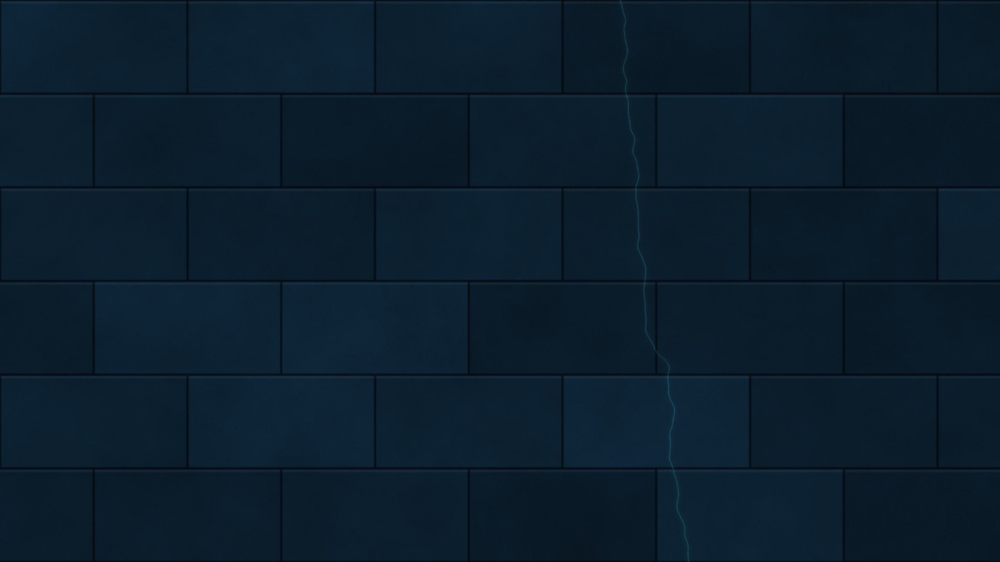

Liferay DevCon 2026
Making Liferay
blazing fast
Miroslav Ligas
Solution Architect · Proventeq
Two halves
1
Tune the portal.
Measure it.
Stages stack, and each gets the same test
k6 · same pages, same rates · Varnish edge · DXP 2026.q1.12 · one 20-core box
The ladder
Same test on every rung: 200 first-visit page views a second
p95
server CPU
5
Precompute
S6 · static HTML on nginx
3 ms
0.1 cores
4
Edge HTML
S3 + S4 · no-store off, Varnish caches guest HTML
8 ms
0.8 cores
3
Edge static
S3 + Varnish · assets cached, HTML still from Liferay
19 ms
1.9 cores
2
JVM caches
S2 · 16 fragments marked Cacheable
37 ms
8.2 cores
1
Origin render
S0 · stock, nothing changed
344 ms
13 cores
Measured · k6 CPU excluded · one box, no network · add your CDN's RTT to rungs 3–5 · rung 5's page is 5 requests, not 56
A stock guest page is uncacheable. Twice.
$ curl -sSD- -o /dev/null https://your-liferay/
cache-control: private, no-cache, no-store
set-cookie: JSESSIONID=…
set-cookie: COOKIE_SUPPORT=true
set-cookie: SERVER_ID=…
It's CPU in the app tier
11k
users · Asset Publisher
Liferay DXP Performance Benchmark Study · one 8-core node, DXP 2024.Q2
S1 Hygiene
Remove the noise first
index.on.startup=false
session.tracker.memory.enabled=false
JSP development=false
no portal-developer.properties
Measured under load: guest browse p95 49 → 35 ms · Set-Cookie and no-store still on 100 % of guest pages
S2 JVM caches
Cache the fragments, not the pages
2025.Q2
Ehcache 2 → 3
Rewrite your XML
Cluster Link
Invalidates
Never replicate
Cacheable
Audit first
Or leak user data
Measured at 400 pages/s: p95 90 → 13 ms, Liferay 12.4 → 2.1 cores · stock at 600/s: 69 % of busy threads re-parsing fragments
S3 Front-end delivery
Assets aren't slow, but they eat the CPU
cdn.host rewrites
- Theme JS / CSS
- Module bundles
- Portal images
It doesn't touch
- Documents & Media
- Adaptive Media
- Page HTML
Measured: TTFB flat · guest HTML private, no-store 100 % → 0 % · D&M public, max-age=86400 · Set-Cookie still sent
S4 Edge HTML
Two rules, bypass first
1
Auth cookie?
Pass to origin.
2
Everything else:
strip cookies, cache.
Get rule 1 wrong and it's a data breach.
S4 result: guest traffic at the edge
−96%
guest page p95, 49 → 2 ms
99.9%
edge hit, cacheable requests
0%
sign-ins served from cache
Measured · S0 → S4, mix at ≈ 120 req/s · Liferay CPU 10.1 → 1.9 cores at S3 → S4 · LAB-RESULTS.md
Measured · same load at every stage
The edge is the step that counts
■ served by Varnish · own scale per panel · DXP 2026.q1.12, mix at ≈ 120 req/s · LAB-RESULTS.md
Measured · pushed until it breaks
How far each stage goes
Rate stepped up until saturation · cookie-less guests · the S4 limit was the load generator, Varnish used 2.8 cores · STRESS-RESULTS.md
S5 Purge on publish
Purge by tag, not by URL
ModelListener
after commit
Measured: publish → fresh at the edge 55.7 s on TTL alone · 17–19 ms with a ban right after commit
Measured · CPU per unit of work
One sign-in costs a hundred page views
Container CPU at a clean step ÷ rate · search ≈ 90 % Elasticsearch, 12× cheaper with highlighting off · RUNG-RESULTS.md
Measured · search highlighting off
One setting, twelve times the search
12×
clean capacity, 25 → 300 searches a second
18×
faster p95 at 20 searches a second, 687 → 38 ms
12×
less CPU at 20 searches a second, 9.5 → 0.8 cores
highlightEnabled=false · same results, our template shows no snippets · sidecar Elasticsearch, small index

The edge makes the fast path fast.
It doesn't make the slow path cheap.
Part 2
Don't render it at all.
Draw the line by cardinality
Precompute
- Marketing
- Docs
- Blogs
- Catalogues
Render live
- Intranets
- Dashboards
- Checkout
- Anything per-user
Authored in Liferay, served as files
Webhook on publish
Timer every 15 min
Live demo against liferay.dev
0.1s
when nothing changed
$ node pipeline/regenerate.mjs
Same post, two deliveries
Portal render
120 kB
34 scripts
Measured · static nginx vs Liferay behind Varnish
Static wins on the page, not the HTML
HTML alone is a tie: ≈ 25,000 req/s each. Whole page views: 1,200/s through Varnish, 10,000/s static.
■ static · both at 1,000 page views/s · first visit, empty browser cache · one box, no network · STATIC-VS-EDGE.md
AI in charge, on an allowance
$0.03
for the whole catalogue. Once.
What you give up
| Lost | Instead |
|---|
| Portal search | Pagefind, built at build time |
| Comments, forms | Islands → Headless API |
| Sign-in state | Late-hydration island |
| Preview, workflow | Stay in the portal |
Pages and AI: the same move
| Static pages | AI features |
|---|
| Expensive | Render | Inference |
| Do it at | Publish | Publish |
| Invalidate | Tag purge | Content hash |
| Per request | ≈ 0 | ≈ 0 |
www.liferay.com already does this
x-lfr-guest-html-cache: 1
Please ship it.
Thank you
Miroslav Ligas
Solution Architect · Proventeq